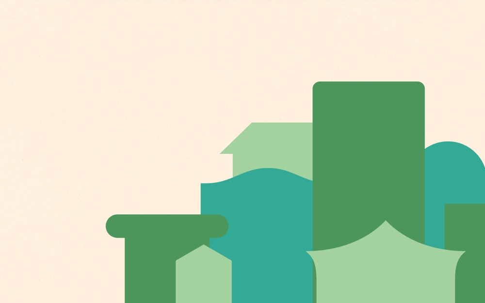

株式会社 工匠
#fff0de の地に #fff0de を大きな面で置く配色。影を使って浮かせる。本文 20px・行間 2、セクション間 272px。
配色
文字色は #111111 / #a3d29e / #008742 / #ffffff。
どこに使っているか（箇所数）
| 色 | 面 | 文字 | 枠線 | ボタンの地 |
|---|---|---|---|---|
#008742 |
1 | 7 | 6 | 0 |
#fff7ee |
7 | 0 | 0 | 6 |
#4c965c |
0 | 0 | 3 | 0 |
#a3d29e |
3 | 22 | 0 | 0 |
#111111 |
0 | 34 | 0 | 0 |
#ffffff |
7 | 8 | 0 | 0 |
#fff0de は
文字
和文
dnp-shuei-gothic-kin-std欧文
dnp-shuei-gothic-kin-std本文
20px / 行間 2この見本は Noto Sans JP で表示していますあのイーハトーヴォのすきとおった風
あのイーハトーヴォのすきとおった風
あのイーハトーヴォのすきとおった風
あのイーハトーヴォのすきとおった風
あのイーハトーヴォのすきとおった風
あのイーハトーヴォのすきとおった風
余白とかたち
| コンテンツ幅 | 1304px | |
|---|---|---|
| 読ませる段の幅 | 632px | |
| セクションの上下余白 | 272px | |
| 並びの間隔 | 9 / 11 / 45 / 157px | |
| 角丸 | 0px（大きな面は 4px） | |
| 影 | rgba(228, 220, 212, 0.5) 0px 4px 16px 0px | |
| 画面幅の切り替え | 920 / 919px |
ボタン
お問い合わせ
transparent / 13px / 400 / 角丸 0px
もっと見る
#fff7ee / 13px / 400 / 角丸 4px
もっと見る
transparent / 20px / 600 / 角丸 112px
ページの組み立て
上から順に、実際に並んでいたセクション。高さの比率もそのまま。
1
ヒーロー（画像）
11100px
2
1カラム・画像あり
960px ・ #008742
3
1カラム・文字だけ
900px
4
1カラム・文字だけ
900px
全4セクション、すべて全幅。
面と、その上に置く線・文字
| 面 | 使用箇所 | 線と文字 |
|---|---|---|
#fff7ee |
1 | #fff0de |
#008742 |
1 | #a3d29e |
線と文字の色は固定ではなく、乗っている面で入れ替える。
部品
囲みらしい繰り返しの箱はなかった。枠で囲まず、余白だけで区切っている。
角丸は 0px だが、完全な円は別扱いで 6 箇所（16px×3、40px×3）。角を丸めないことと、円のモチーフは両立する。
タグ
角丸 4px ／ 13px
PCとスマホ
同じサイトを390px幅で測り直した値。
| PC 1440px | スマホ 390px | |
| 本文 | 20px / 行間 2 | 12px / 行間 1.67 |
| 見出し | 36px | 25px |
| セクションの上下余白 | 272px | 168px |
| 左右の余白 | — | 20px |
| 並びの間隔 | 45px | 8px |
文字サイズの段は 25 / 19 / 17 / 15 / 12px。セクション余白はPCの62%まで詰める。
画像
3:2・6枚
12枚。角丸 0px。